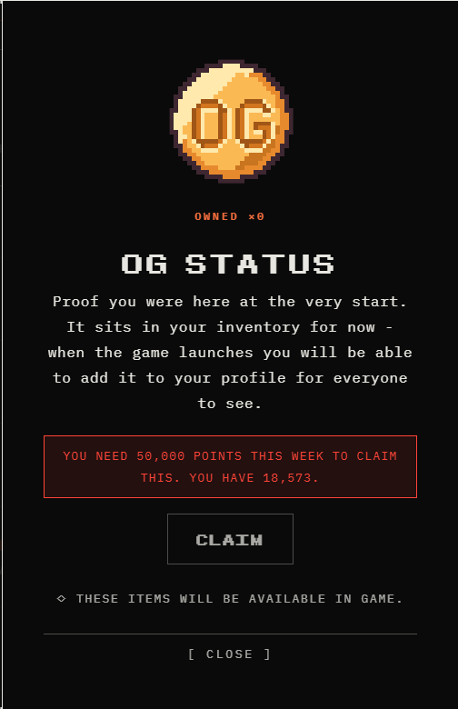

0. TERMINOLOGY DECODER
The official docs use several different names for the same things, which trips almost everyone up. Here's what each term means and what else it gets called.
MONSTER EGG
- Monster Pack
- starter egg
- sign-up egg
- Platinum egg
The item you get just for signing up. Its tier (Platinum → Basic) depends only on sign-up order.Not an NFT. No wallet needed.
GENESIS AIRDROP
- Trainer Point airdrop
- NFT Airdrop
- Genesis Drop
The 5,000 monster NFTs given to the top 5,000 trainers on points. Lands automatically at launch. All four names mean the same event. Full breakdown →
GENESIS MONSTER
- Monster NFT
- Legendary Founder NFT
- founding monster
The creature itself — the NFT you receive from the airdrop. Top 1,000 get the Legendary version.
FREE MINT
- Ronin free mint
- October mint
10,000 blind mints on October 1st, open to every pre-registered trainer. Won on speed, not rank.
TRAINER NUMBER
- rank
- leaderboard position
- points rank
Your permanent position among founding players. Earned purely on points — never on sign-up date.
TIER
- trainer tier
- reward tier
A band on the leaderboard your rank falls into. Decides which egg you receive and which wave you're in.
WAVE
- access wave
- early access wave
The batch you're let into the game with. Wave 1 enters first, Wave 4 last.Rank 100,001+ gets no wave at all.
BUMPKIN LEVEL
- Sunflower Land level
- SFL level
Your level in Sunflower Land. Decides when your access code unlocks during pre-registration — nothing else.Does NOT affect your leaderboard rank.
$FLOWER
- FLOWER
- the token
The shared token across the studio's games. Yakkamon launches no new token. Deposits earn points and stay withdrawable tax-free.
GAS
- network fee
- transaction fee
A small fee paid to the network to complete an on-chain action — like a card processing fee, but it goes to the network, not to Yakkamon. On Ronin it's usually cents.
RONIN
- the network
- the chain
The blockchain Yakkamon runs on, built for games with much lower fees than Ethereum. Where the free mint happens.
EARLY ACCESS
- EA
- launch
- Q4 2026
When the game opens, in waves by rank. Only the top 100,000 trainers on points get in.Pre-registering alone does not qualify you.
1. HOW TO PRE-REGISTER (SUNFLOWER LAND PLAYERS)
If you already play Sunflower Land, your Bumpkin Level decides when your access code becomes available. Codes unlock for the highest levels first, then a new tier opens each day:
| Bumpkin Level | Access date |
|---|---|
| 150+ | Jul 30, 2026 |
| 100+ | Jul 31, 2026 |
| 50+ | Aug 1, 2026 |
| 20+ | Aug 2, 2026 |
Step 1: Find Yakkamon in the Plaza
Head to the Plaza in Sunflower Land and look for the "Yakkamon" sign next to Stella. Click on it to open the access code panel.

The Yakkamon booth sits right next to Stella in the Plaza.
From there, click "Get Access Code" to receive your unique code.
Step 2: Sign up with your code
Once you have your code, go to yakkamon.com and enter it on the "Enter Trainer Code" screen, then hit Confirm.

Enter your code exactly as shown, then confirm to complete pre-registration.
Full walkthrough with more detail is in the original news post.
2. GENERAL
Is YakkamonWorld the official Yakkamon website?
No. The official pre-registration site is yakkamon.com, and the official documentation is at docs.yakkamon.com. This site is a fan-run portal that explains things in plainer language and isn't affiliated with the Yakkamon team or SunflowerLand.
What is Yakkamon?
A creature collector crossed with idle farming. You hunt and catch wild monsters out in the world, then put them to work farming, gathering and producing around the clock — so your farm keeps running while you're away. You can craft gear and take other trainers on in the arena.
Who makes Yakkamon?
Thought Farm, the team behind Sunflower Land: over 1 million players, more than 100 open-source contributors, and over five years of building live and in the open.
Is Yakkamon free to pre-register?
Yes. Season 0 pre-registration is free and needs nothing but an email address. You don't need a wallet, and you don't need to be an existing Sunflower Land player.
Do I need to be an existing Sunflower Land player?
No. Yakkamon is a completely new game and anyone can pre-register with just an email address. Sunflower Land players are welcome — your Bumpkin Level decides when your access code unlocks — but nothing about Sunflower Land is a requirement.
Which network does Yakkamon run on?
Ronin, a blockchain built for games with much lower fees than networks like Ethereum. It's also where the free mint happens on October 1st.
What is the official Yakkamon website?
yakkamon.com is the only official Yakkamon website. The official X account is @yakkamon_game and the official documentation is at docs.yakkamon.com.
Is there a video version of any of this?
Yes. We run a YouTube channel at youtube.com/@YakkamonWorld with short 2–3 minute explainers covering pre-registration, access codes, the free mint and each gameplay system. Every episode is indexed on our videos page, each one linked to the written version — the same ground as this site, for anyone who'd rather watch than read. The channel is also linked from the Community page.
Two to start with: What Is Yakkamon? The 2-Minute Explainer ↗ covers the game, the team behind it and why pre-registration matters. How To Pre-Register ↗ walks through signing up, and the verification step that decides whether you can mint on October 1st.
Where can I ask a question that isn't answered here?
We run an unofficial Telegram channel and chat group. The channel posts pre-registration updates as tiers unlock; the chat group is where you can ask anything, and our access bot will tell you your access date if you send it your Bumpkin Level. Join at t.me/YakkamonWorld, or see the Community page for all the links.
Do I need to know about crypto, or own a wallet, to take part?
Not to pre-register — that only needs an email address. A wallet only becomes relevant if you want to take part in the Free Mint on October 1st, since that's an on-chain claim. If you plan to do that, you'll want a Ronin-compatible wallet set up beforehand. The Genesis Monster airdrop at launch doesn't require any action or wallet setup on your part — it's based purely on your final leaderboard rank.
3. RANKS, TIERS & WAVES
What's the difference between my rank, my tier, and my wave?
Three words that get used close together, so they're easy to blur:
- Trainer number (your rank) — your exact position on the leaderboard, like #4,521. It's permanent, and it's what every other reward is calculated from.
- Tier — a points milestone you've passed on the reward track (for example, 1,000 points unlocks Tier I). Passing a tier unlocks its reward on its own.
- Wave — the batch you're let into the game with when early access opens. Higher ranks are in earlier waves.
What does my rank actually get me?
Your trainer number decides two things at once: which Genesis egg (the egg your founding monster hatches from) you're given, and which wave you play in. Here's the full ladder:
Of those who do get in, the top 5,000 also receive a Genesis Monster NFT, and within that the top 1,000 get the Legendary version.
When do I find out my rank?
Trainer numbers and tiers are revealed shortly before early access opens in Q4 2026. Until then the leaderboard is still moving, so a rank you hold today isn't locked in — and neither is anyone else's.
Does signing up early guarantee me a good rank?
No, and this is the single most common misunderstanding. Signing up early sets your Monster Egg tier (which starting egg you get) and nothing else. It doesn't reserve a leaderboard position and it doesn't guarantee early access. Every rank is won on points.
How do I actually earn points?
- Daily nurture — tap your egg 3 times, once a day. Pays 6 points rising to 10 a day at a 30-day streak, with a 36-hour grace period — though that only covers a whole missed day if you nurture after 12:00 UTC.
- Quests — link your Discord and Twitter/X accounts, post weekly, and take part in the community.
- Referrals — points for every friend who signs up through you.
- The free mint — minting the Genesis Monster on Ronin on October 1st also earns points (see section 4).
- $FLOWER deposits — open now (since 9 Aug, 8:00 PM ET / 10 Aug UTC). Points are boosted two ways: a weekly multiplier paying 3× through the opening week and falling 0.2× each week until it rests at 1×, plus a size bonus rated per deposit that doubles at every step — +10% at 50 $FLOWER up to +80% at 50,000. The full schedule →
Daily actions compound: streaks and referrals stack over time, so an early start is genuinely harder for someone else to overtake later.
Is there more than one leaderboard?
Yes, and they pay out completely differently:
- Final ranking — your all-time points total. It never resets and pays out once, at early access in Q4 2026. This is what decides your trainer number, your Genesis Monster and your wave.
- Weekly ranking — based only on the points you earn that week, and it resets every week. It pays a resource box, food box, raffle ticket and loot box, every week until early access.
Most people only play the first one. The weekly board is a fresh contest each week against everyone else's weekly total — not their all-time one — which makes it far more winnable. How to play both at once →
What time of day should I nurture?
After 12:00 UTC, and then keep to roughly that time. The game day rolls over at midnight UTC, and separately you get 36 hours from your last nurture before the streak resets. Those two clocks only line up in your favor in the second half of the UTC day: nurture at 08:00 and your window expires partway through tomorrow, so a missed day still breaks the run; nurture at 20:00 and it stretches past tomorrow entirely.
Noon UTC is 8:00 AM in New York, 1:00 PM in London, 8:00 PM in Manila and 9:00 PM in Tokyo — so in the Americas you're usually fine already, while further east a morning nurture leaves you no slack at all. The full reasoning →
Can I reach a Legendary rank without depositing $FLOWER?
The top 100 is realistically a paid bracket — a 50,000 $FLOWER deposited total is worth 70,000 points, which no amount of free play matches. Below that it's genuinely contestable. Referrals pay 30 points each and are uncapped — your first five instantly, and after that only once your friend has verified Discord, verified Twitter/X and reached 100 points, so it takes real onboarding rather than just handing out codes. Roughly 165 valid referrals are worth as much as a 5,000 $FLOWER deposit. A free player with real reach can compete for the 101–1,000 Legendary bands; without it, aim at the top 5,000 where the Rare Egg A band starts. The free-to-play guide →
What if I'm not Bumpkin Level 100+, or don't play Sunflower Land at all?
You're not shut out. Your Bumpkin Level only affects when your access code unlocks during pre-registration — it has nothing to do with your leaderboard rank. Lower tiers opened automatically day by day, and anyone can now use a referral code from another trainer. See the access code walkthrough.
Is the Genesis Monster tradable, or is it locked to my account?
Fully tradable. Genesis Monsters arrive with in-game XP already on them, they're revealed live when early access launches, and they will never be minted again — so the supply is fixed at 5,000 forever.
4. THE THREE REWARDS, SIDE BY SIDE
Three different things get handed out before and at launch, and they're easy to mix up because all three involve monsters. Here's what separates them:
MONSTER EGG
Your welcome gift for signing up.
- HOW YOU GET ITSign up with an email. That's the whole requirement.
- WHAT DECIDES ITSign-up order, and only your egg tier — nothing else
- SUPPLYUp to 500,000 — Platinum, Gold, Silver, Bronze, then Basic
- IS IT AN NFT?No — gems and in-game items
- WALLET NEEDED?No
- WHEN IT ARRIVESAppears on your farm the first time you log in
FREE MINT
A Genesis Monster NFT you claim yourself.
- HOW YOU GET ITMint it on Ronin on October 1st
- WHAT DECIDES ITSpeed — first in, first minted. Rank is irrelevant, but you must be verified first
- SUPPLY10,000 only — with 5 Legendaries hidden inside
- IS IT AN NFT?Yes
- WALLET NEEDED?Yes — plus a little RON for gas
- WHEN IT ARRIVESWallet on the day — but sealed until the Early Access reveal
GENESIS AIRDROP
The prize for finishing high on points (the docs call this the Trainer Point airdrop).
- HOW YOU GET ITFinish in the top 5,000 on the leaderboard
- WHAT DECIDES ITYour points rank — nothing else
- SUPPLY5,000 reward eggs, of which the top 500 ranks earn Legendary
- IS IT AN NFT?Yes
- WALLET NEEDED?Yes
- WHEN IT ARRIVESAirdropped automatically at early access — no action needed
The one thing worth understanding: signing up early sets your Monster Egg tier and nothing else. It does not reserve you a leaderboard place, and it does not guarantee early access. Every rank is won on points.
And the three are linked — minting on October 1st earns you points, which pushes your leaderboard rank, which is what decides your Genesis Airdrop and which early-access wave you're in. The free mint isn't just a free NFT; it's a rung on the ladder.
When does the leaderboard for the Genesis Drop end?
Trainer numbers and tiers are revealed shortly before early access opens in Q4 2026 — the official docs haven't published an exact cut-off date. Your points decide your rank, and your rank decides which Genesis egg you receive and which early-access wave you join, so every point still counts right up to the reveal.
What is "gas," and do I need real money?
Gas is a tiny processing fee paid in the network's own currency to complete an on-chain action — similar to a card processing fee, except it goes to the network, not to Yakkamon. On Ronin this is usually a small fraction of a dollar. You'll need a small amount of RON (Ronin's currency) sitting in your wallet to cover it.
What is Ronin?
Ronin is the blockchain network Yakkamon runs on — built specifically for games, with much lower fees than networks like Ethereum. Items living on Ronin (like your Genesis monster) are provably yours and can be traded with other players, rather than being locked inside one company's database.
5. MONSTER EGG TIERS & REFERRALS
What does signing up early actually get me?
One thing: your Monster Egg tier. Eggs are handed out in registration order, and once a tier fills up it's gone.
| Sign-up position | Monster Egg |
|---|---|
| 1 – 10,000 | 💎 Platinum |
| 10,001 – 25,000 | 🥇 Gold |
| 25,001 – 50,000 | 🥈 Silver |
| 50,001 – 100,000 | 🥉 Bronze |
| 100,001 – 500,000 | Basic |
A Platinum egg is mainly a cosmetic and early-collectible difference — the team has confirmed the sign-up tiers function that way rather than as a power difference. Every monster works as a worker for you regardless of which egg it came from. It is not a head start on the leaderboard and carries no claim on early access.
Is Legendary Egg A better than B or C?
No — all three are the same power level. A is not a stronger monster than C. This is the single most common misunderstanding about the rank ladder, and it changes what’s worth chasing.
What differs between them is species and role. Each letter hatches a different Yakkamon, and they’re built for different jobs — some are battle monsters, others are utility monsters for your farm. So A, B and C aren’t three rungs on a ladder. They’re three different creatures at the same tier.
The only real difference is rarity. A is scarcest by design — roughly 50 Egg As exist, against about 200 Egg Bs and 260 Egg Cs. That matters for collectors and for resale value — it does not mean A wins fights.
Which Legendary Egg should I want?
You don’t get to pick — your points rank decides it. But since all three are the same power level, there’s no version of this where you should feel short-changed by landing in a lower band.
If you’re collecting, A is the scarce one. If you’re playing, the useful question is whether the monster you get is a battle type or a farm-utility type, and that’s decided by species rather than by letter grade. The exact species and their utilities haven’t been published yet — the team is holding those back until after testing so they can see the effect on the game’s economy first.
How is this different from the sign-up egg tiers?
Completely different systems, and they get confused constantly.
- Sign-up egg tiers (Platinum, Gold, Silver, Bronze, Basic) come from when you registered, and the team has said they’re mainly cosmetic and early-collectible.
- Legendary Eggs A / B / C come from your points rank, are limited to the top 500 trainers, and hatch genuine Legendary monsters.
One is decided the day you sign up and matters least. The other is earned over months. The full rank ladder →
What is the egg counter I keep seeing?
It tracks Monster Egg tiers only — how many Platinum sign-up slots are left. That is all it tracks. It is not an early-access counter, and it is not counting down Genesis Monster NFTs. When a tier fills, the only thing you've missed is that egg type; everything that actually decides your rank is still wide open.
Is my Monster Egg an NFT?
No. It's an in-game item — nothing to mint, nothing to claim, no wallet needed. It simply appears on your farm the first time you log into Yakkamon.
I signed up late. Am I out of the running?
Not at all. A Basic egg holder who earns points every day will finish above a Platinum egg holder who signed up and never came back. Rank is earned, not reserved.
How do referral points work — and can they be taken away?
Yes, they can. Referrals are reviewed before rewards are finalized, so referral points stay provisional until then. A referral only counts if the friend is a real, separate person with a verified account who actually takes part in pre-registration. Your first five referrals are instant. From the sixth onward, your friend must do all three of these before the points land: verify their Discord, verify their Twitter/X, and reach 100 points in their trainer dashboard. A sign-up alone pays nothing. The rule change →
These don't count:
- Unverified accounts — sign-ups that never complete verification.
- Multi-accounting — referring yourself with alt accounts, throwaway emails, or shared devices and wallets.
- Bots and automation — bulk or scripted sign-ups.
- Inactive sign-ups — accounts made purely to farm a referral bonus, with no real activity.
How does the reward track work?
It runs on a 7-day cycle rather than fixed points milestones. Every week a new list of rewards appears for you to claim; claimed items go into your inventory and stay there, and you'll be able to claim them in-game once you have early access. Each new list replaces the last, so anything left unclaimed is gone — check back weekly.
What is OG Status in my profile?
OG Status is a cosmetic badge, and the top item on the weekly reward track. It’s proof you were here at the very start — nothing more, and the game says so itself.
“OG” is slang for “Original Gangster.” The phrase comes from 1990s American hip-hop, but it long ago stopped meaning anything to do with crime. In everyday use it just means the original — someone who was there first, before a thing got popular. Calling someone an OG is a compliment: they were early, they stuck around, and they remember how it used to be.
It’s used that way across gaming and internet culture generally — an OG player is a day-one player. So an OG Status badge on your Yakkamon profile says one thing to everyone who sees it: this person was here before you were.

OG Status in the trainer dashboard. It sits in your inventory until the game launches.
How you get it: reach 50,000 points in a single week, at any point before early access begins. It’s a weekly target, so it resets with the reward track — miss it one week and you can go again the next.
Until launch it sits in your inventory. When the game opens you’ll be able to add it to your profile for other players to see.
Worth being realistic about the bar: 50,000 points in one week is far beyond what free play produces, so in practice it lands with people making sizeable $FLOWER deposits. If you’re playing free, this is not a target worth reshaping your week around. How deposits convert to points →
6. GENESIS MONSTERS & THE REVEAL
What exactly is a Genesis Monster?
A Genesis Monster is one of 5,000 founding creatures handed out free when early access opens through the Genesis airdrop (the official docs also call this the Trainer Point airdrop or the NFT airdrop — all three names mean the same thing), as a thank-you to players who backed Yakkamon before launch. There is no sale, no second window, and no way to buy in afterwards. Once the leaderboard locks, the Genesis line closes permanently.
Are they just collectibles, or do they actually do something?
They're playable creatures that sit at the top end of the power curve — not cosmetic items. Three things make them worth having:
- Born with XP — each one arrives already carrying in-game experience, so you start ahead of anyone who caught their first creature on launch day.
- Fully tradable — hold it, build your roster around it, or trade it on-chain. It's yours.
- Specialized — some are built for battle, some for gathering (resource production), and others for different corners of the game entirely. Some are simply stronger than others.
Do I get to choose which one I get?
No — and you won't even know what you have until launch day. At early access launch there's a Genesis Reveal Event (a live unwrapping), where every Genesis Monster is revealed at once. Some trainers will find a top-tier battler, some a gathering monster that quietly produces resources for months, and a few will reveal something the rest of the server spends the season trying to trade for.
Is the airdrop first come, first served?
No. The 5,000 Genesis Monster NFTs go to the top 5,000 trainers on the points leaderboard — not the first 5,000 to sign up. Registering on day one earns you nothing here; points do.
So what decides whether I get one at all?
Only your final leaderboard rank on points:
| Leaderboard rank (by points) | Airdrop |
|---|---|
| 1 – 1,000 | Legendary Monster NFT |
| 1,001 – 5,000 | Monster NFT |
| 5,001+ | Not eligible for the airdrop |
Only your final leaderboard rank:
7. THE FREE MINT — OCTOBER 1ST
What is the free mint?
On October 1st, a free mint goes live on Ronin. Mint one and you're holding an exclusive early Yakkamon monster. It costs nothing beyond the network fee (gas) — there's no mint price.
How many are there?
Only 10,000 can be minted. It's first in, first minted — when the last one goes, the free mint closes and these early monsters can't be obtained again. No restock, no second wave. With 10,000 spots against hundreds of thousands of trainers, being ready the second it opens matters.
Do I need a good rank to take part?
No — and this is what separates it from the airdrop. The free mint is open to every pre-registered trainer whatever your leaderboard position. It's won on speed, not points. You do have to be pre-registered before October 1st, though; there's no joining after the fact.
Do I need to do anything before mint day?
Yes — complete your verification. The mint is whitelist-gated, and only verified pre-registered accounts make the list. Signing up isn't enough on its own; an unverified account can't mint. The whitelist also means:
- One mint per trainer. Alt accounts, throwaway emails and shared wallets don't stack.
- Bots are filtered out beforehand, using the same review applied to referrals.
- No gas war. Paying more gas can't jump the queue if you aren't whitelisted.
Do I get to see what I minted?
Not straight away. You're minting blind — all 10,000 stay sealed until Early Access launches, and that's the moment every one of them is revealed at once. Nobody knows what's in the pool until the doors open.
Is there anything rare in there?
Yes. Seeded into the 10,000 are 5 Legendary monsters — the exact same legendary, top-of-the-power-curve creatures handed out in the Trainer Point airdrop (the Genesis airdrop). Five mints out of ten thousand. Someone is going to open one.
Why bother if I'm already pre-registered?
Because minting earns pre-registration points, and points decide your trainer number, your Genesis airdrop, and your access wave. The mint isn't a side quest — it feeds directly into your leaderboard rank. It also runs a full month ahead of early access, so mint holders are the founding trainers.
Do I need to mint on October 1st to get my Monster Egg?
No — the two are completely unrelated. Your Monster Egg is already yours from signing up and appears on your farm automatically. The free mint is a separate, optional event for a different thing entirely: an NFT monster.
What do I do with it once I've minted?
You'll be able to deposit minted monsters into Yakkamon once you have game access.
8. $FLOWER DEPOSITS
What is $FLOWER, and is it a new token?
No, it isn't new. Yakkamon deliberately doesn't launch its own token — it reuses $FLOWER, the same one already running across the studio's other games. That means you can start building an in-game balance before early access even opens.
What does depositing actually do for me?
Two things at once, and this is the part people miss:
- It credits your in-game balance. The $FLOWER is held for you and waiting the moment you get access.
- It earns leaderboard points. Two boosts stack. A weekly multiplier — 3× through the opening week, then 0.2× less every week until it settles at 1×. And a size bonus rated per deposit, doubling at each step from +10% at 50 $FLOWER to +80% at 50,000. Splitting one deposit into several smaller ones earns less, because each piece gets its own smaller bonus.
You aren't trading one for the other. You keep the $FLOWER and the points, and those points push you toward better trainer tiers, earlier access waves, and the Genesis airdrop.
Are the points one-time, or do I keep earning while my $FLOWER sits there?
One-time, per deposit. Each deposit is scored once, in the week it confirms, and that’s the end of it — a deposit sitting in your balance doesn’t keep generating points.
But every deposit earns its own points, so several deposits each pay out. The catch is that each one is also scored on its own size: a single 5,000 $FLOWER transfer earns the +40% bonus, while ten transfers of 500 earn ten separate +20% bonuses instead. That’s why splitting costs you.
Two things are locked in at the moment you send, and neither changes afterwards:
- The week you deposit in sets the multiplier — 3× in the opening week, falling 0.2× weekly to a 1× floor.
- The size of that single transfer sets the bonus tier.
When did deposits open, and why do the docs say 10 August?
Deposits opened on 9 August at 8:00 PM ET, which is when deposit addresses were issued. They’re live now. The official docs say 10 August because they quote the UTC date — 8:00 PM ET is midnight UTC, already the 10th in London and everywhere east of it. Same instant, two calendar dates. Minimum deposit is 5 $FLOWER on Base or Ronin, and points land in the week the deposit confirms.
Should I deposit all at once or spread it out?
All at once, and as early as you can — both bonuses push the same way. The weekly multiplier is 3× in the opening week and falls 0.2× weekly to a floor of 1×, and the size bonus is rated per deposit, so the full amount has to land in one transfer. Concretely: 5,000 $FLOWER sent once in the opening week earns 17,000 points; the same 5,000 sent as ten deposits of 500 once the multiplier bottoms out earns 6,000. The full breakdown →
Can I get my $FLOWER back if I change my mind?
Yes. There's no lock-up and no penalty. You can withdraw with no withdrawal tax once you have game access.
Where do I get $FLOWER in the first place?
Two routes. You can earn it free by playing Sunflower Land — selling crops, deliveries, seasonal chapters — since $FLOWER is that game’s in-game token. Or you can buy it — $FLOWER already trades on the Base network, and Yakkamon accepts deposits on Base or Ronin, so Base needs no bridging.
For anything to do with acquiring or depositing it, work from the official Yakkamon deposits guideline and the deposit panel in your own trainer dashboard. Never take a contract address or deposit address from a reply or a DM — fake tokens with the same name and ticker are a common way people lose money. Full breakdown →
Which deposit week am I in right now?
The rate steps down every week, so it depends when you read this. Week one (10–16 Aug) paid 3×, and it falls 0.2× each week until it rests at 1× from around 19 October. The deposit guideline carries the full week-by-week table with a live indicator showing the current rate.
When can I actually withdraw — is it Q4 this year?
Yes, this year, but with two qualifications. The official guideline says your $FLOWER can be spent in-game or withdrawn once you gain access to the game, and early access opens in Q4 2026.
Access is staged by wave, not a single date. Wave 1 is the top 1,000 on points, wave 2 runs to 5,000, and so on. If withdrawal follows access, a later wave waits longer than an earlier one. No exact dates have been announced for any wave.
And it isn’t instant even then — percentage-based limits apply for the first few weeks after launch, capping how much you can take out in a period. So “deposit now, withdraw everything on day one” isn’t a plan that’s available.
What are the withdrawal limits I've heard about?
For security, percentage-based limits may apply during the first few weeks after launch. These cap how much can be withdrawn in a given period — they don't stop you withdrawing. It's a standard safeguard while the game economy stabilises, and the limits are lifted as things settle.
Is depositing risky?
We're not financial advisors and can't tell you whether to deposit — that's your call. What we can say factually: $FLOWER isn't a new speculative token, deposits are held on-chain rather than in a company account, there's no lock-up, and withdrawal is tax-free. As with any on-chain asset, smart-contract and platform risk still apply, the same as with any blockchain system.
9. LAUNCH TIMING
When does the game actually come out?
Early access opens in Q4 2026, and it rolls out in waves rather than all at once. Higher-ranked trainers are in Wave 1 and later waves follow. A full public launch date beyond early access hasn't been announced.
Is there a hard date?
The official docs commit to Q4 2026 for early access; the free mint has a firm date of October 1st. No exact early-access day has been announced, so our timeline shows the quarter rather than a specific date — check the News page for confirmation once one is set.
Do I lose my place if I can't play on day one?
No. Your wave decides when the door opens for you, not how long it stays open. Your trainer number is permanent, and your Genesis Monster is airdropped to you regardless of when you first log in.
Does Yakkamon mean Sunflower Land gets less attention?
The team's answer is no, and they've published their reasoning in some detail. The short version:
- Sunflower Land is still shipping. Over the same six months Yakkamon has been in development, Sunflower Land committed to a two-year roadmap, open-source contributors went up, and the release cadence kept climbing.
- A creature collector doesn't belong inside a farming game. Bolting one onto Sunflower Land would have taken years and slowed both games down. Spinning it out lets each be built at its own pace.
- Both games grow the same ecosystem. There's no new token — Yakkamon runs on $FLOWER, the same one used across the studio's games. More games means more places to use it.
- The team is growing. They're actively hiring designers, developers, moderators and community managers.
- Five years of shared foundations. The same team has worked together for over five years, so architecture, tooling and hard-won lessons carry directly from one game to the other rather than being rebuilt.
It's worth reading their full answer if this is a concern for you — and Sunflower Land is live today, so you can judge the release cadence yourself.